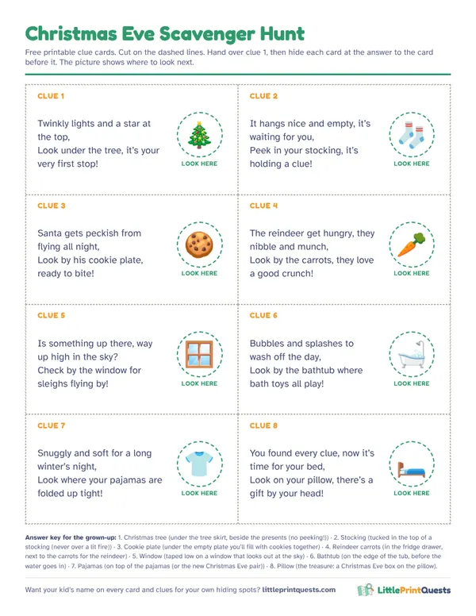

Christmas Eve scavenger hunt for kids
Christmas Eve is the longest night of the year for a 5 year old. This hunt turns the wait into a game: the first clues get the house ready for Santa, the last ones lead through bath, pajamas and into bed, where a Christmas Eve box is waiting.
Make a personalized Christmas hunt8 free rhyming clues
Hide each clue at the answer to the clue before it, while the kids are busy after dinner. Hand them the first card and the trail ends on their pillow.
Clue 1
Twinkly lights and a star at the top,
Answer: Christmas tree. Hide it: Under the tree skirt, beside the presents (no peeking!).
Look under the tree, it’s your very first stop!Clue 2
It hangs nice and empty, it’s waiting for you,
Answer: Stocking. Hide it: Tucked in the top of a stocking (never over a lit fire).
Peek in your stocking, it’s holding a clue!Clue 3
Santa gets peckish from flying all night,
Answer: Cookie plate. Hide it: Under the empty plate you’ll fill with cookies together.
Look by his cookie plate, ready to bite!Clue 4
The reindeer get hungry, they nibble and munch,
Answer: Reindeer carrots. Hide it: In the fridge drawer, next to the carrots for the reindeer.
Look by the carrots, they love a good crunch!Clue 5
Is something up there, way up high in the sky?
Answer: Window. Hide it: Taped low on a window that looks out at the sky.
Check by the window for sleighs flying by!Clue 6
Bubbles and splashes to wash off the day,
Answer: Bathtub. Hide it: On the edge of the tub, before the water goes in.
Look by the bathtub where bath toys all play!Clue 7
Snuggly and soft for a long winter’s night,
Answer: Pajamas. Hide it: On top of the pajamas (or the new Christmas Eve pair).
Look where your pajamas are folded up tight!Clue 8
You found every clue, now it’s time for your bed,
Answer: Pillow. Hide it: The treasure: a Christmas Eve box on the pillow.
Look on your pillow, there’s a gift by your head!
Free printable clue cards
All 8 clues on one sheet with picture hints for pre-readers, dashed cut lines and an answer key for the grown-up doing the hiding. Print it, cut it, hide it.

Download the free printable (PDF)
A hunt that ends in bed
Most hunts wind kids up. This one winds them down. The first four clues are jobs for Santa’s arrival: check the tree, find the stockings, set out the cookie plate and the carrots for the reindeer. Then the trail turns toward bedtime, with a last look out the window for the sleigh, a bath, pajamas and a pillow.
- Start after dinner. About an hour before bed gives you 20 minutes of hunt and a slow, happy bedtime.
- Do each job at its stop. Fill the cookie plate, put the carrots out, wave at the sky. The hunt does the Christmas Eve to-do list for you.
- Dim the lights as you go. Bright rooms for the Santa clues, soft lamps for the bedtime ones.
What to put in a Christmas Eve box
A Christmas Eve box is a small gift opened the night before: something to wear to bed, something to read in it. Any shoebox works. A few ideas:
- New pajamas or cozy socks to wear tonight.
- A Christmas book to read together in bed.
- A hot cocoa packet and a special mug for tomorrow morning.
- A small flashlight for spotting the sleigh from the window.
- A note from the elves saying Santa is on his way.
For kids under 3, skip anything small enough to fit in their mouth, and keep the box to pajamas and a book.
Keep it calm and safe
- Hide clues while they’re busy. Five minutes during dinner cleanup is enough.
- No clues near candles, a lit fire or the oven. If the stockings hang over a fireplace you’re using, hide that clue in a stocking somewhere else.
- Bigger kids read, little ones find. With siblings, the reader reads the rhyme and the youngest gets to pull the card out.
- Same night next year. Keep the cards in the Christmas box. A hunt that happens every year becomes a family tradition.
More Christmas play
Make the days before Christmas count too: a Christmas hunt with a story from Santa’s elves, a pretend Santa’s Workshop for wrapping and toy making, or a snowy Ice Kingdom hunt for a cold afternoon. Our printed Christmas hunt has your kid’s name on every page and arrives by email in minutes.
Make a personalized Christmas hunt
Questions
When should you do a Christmas Eve scavenger hunt?
After dinner, about an hour before bed. Eight clues take about 20 minutes, and because the last clues are the bath, pajamas and the pillow, the hunt ends right at bedtime.
What goes in a Christmas Eve box?
Usually new pajamas, a Christmas book to read in bed and a small treat like a hot cocoa packet. Keep it small: the big presents are for the morning.
Can a 3 year old do a Christmas Eve hunt?
Yes. Read the rhymes out loud and use the free printable, which has a picture of the hiding spot on every card so little ones can find it themselves.
More hunt ideas
- Birthday party hunt
- Ages 3 to 5
- Ages 6 to 8
- Thanksgiving hunt
- Classroom hunt
- New Year’s Eve hunt
- Apartment Scavenger Hunt
- Indoor Scavenger Hunt for a House
- Backyard Scavenger Hunt
- Dinosaur hunt
- Superhero hunt
- Pirate hunt
- Outer Space hunt
- Princess & Knights hunt
- Unicorn hunt
- Mermaid hunt
- Construction hunt
- Pet Vet hunt
- Easter hunt
- Halloween hunt
- Christmas hunt
- Valentine’s hunt
- Firefighter hunt
- Ice Kingdom hunt
- Race Car hunt
- Pizza Shop hunt
- Burger Shop hunt
- Grocery Store hunt
- Post Office hunt
- Library hunt
- Police Station hunt
- Dentist hunt
- Pet Shop hunt
- Coffee Shop hunt
- Italian Restaurant hunt
- Auto Shop hunt
- Play Kitchen hunt
- Doctor hunt
- Puppet Theater hunt
- Secret Agent hunt
- Dress-Up hunt
- Ice Cream hunt
- Airport hunt